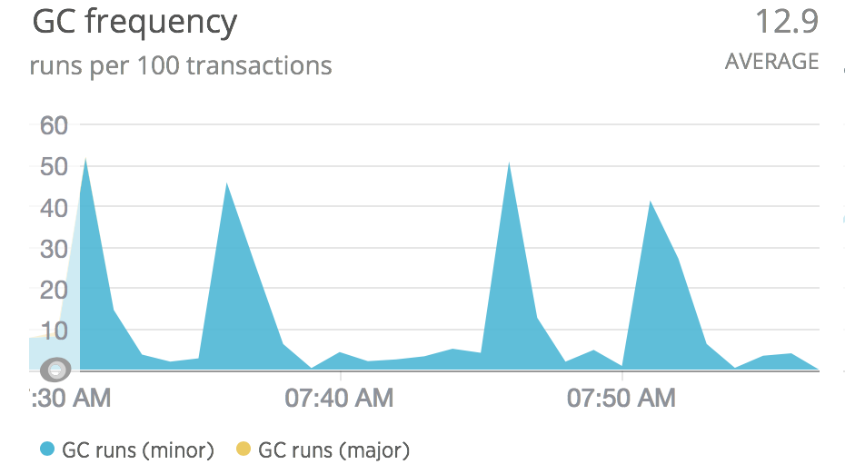

class: center, middle # Rust or # Why Will is Always so Excited --- class: middle # Agenda 1. How is Rust Different? 2. Why is Rust Different? 2. What should you use Rust for? 3. Some comparisons --- class: center, middle # How is rust different? --- class: center, middle # Ruby is slow and C++ is Dangerous --- class: middle # Why Ruby is Slow ## Interpreting at runtime --- class: middle # Why Ruby is Slow ## Garbage. --- class: center, middle  --- Look at this beautiful C code: ``` C #include <stdio.h> int main(void) { char name[5] = "Will"; int ix = 27 * 24; printf("And then we have a '%c' \n", name[ix]); // what will this line print? return 0; } ``` Will it: <ol class="alpha"> <li>Fail to compile</li> <li>Create an error an runtime</li> <li>Always print "And then we have a ''"</li> <li>Sometimes do random different things.</li> </ol> --- Look at this beautiful C code: ``` C #include <stdio.h> int main(void) { char name[5] = "Will"; int ix = 27 * 24; printf("And then we have a '%c' \n", name[ix]); // what will this line print? return 0; } ``` Will it: <ol class="alpha"> <li>Fail to compile</li> <li>Create an error an runtime</li> <li>Always print "And then we have a ''"</li> <li><span class="right-answer">Sometimes do random different things.</span></li> </ol> ---